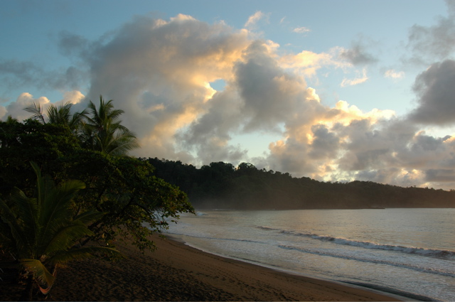
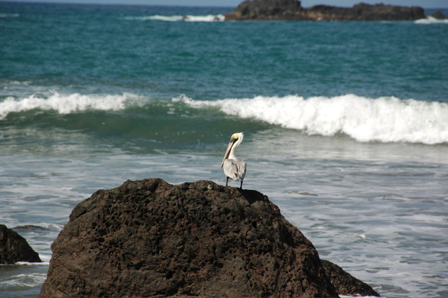
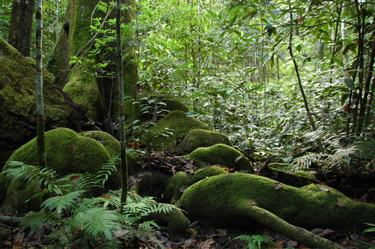
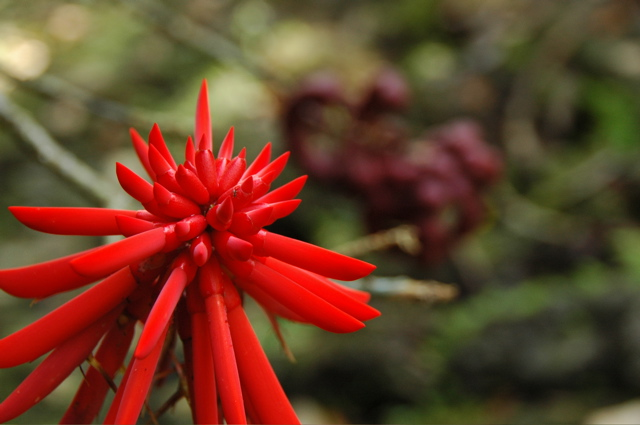
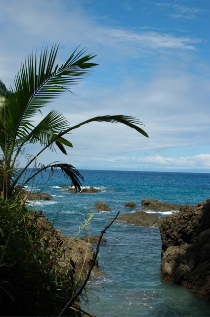

Wir wollten uns ja nicht zu lange auf die faule Haut legen. Daher haben wir uns in die Nähe des hierzulande berühmten Nationalparks Corcovado begeben. Da jedes Land Rekorde braucht, gibt es hierfür den Weltrekord in Artenvielfalt. Um in das halbwegs entlegene Gebiet zu kommen, mussten wir nach Sierpe fahren, wo unser Hotel, das Poor Man´s Paradise, einen kleinen Anleger hat. Von dort aus sind wir mit einem kleinen Motorboot den Rio Sierpe bis zum Meer hinuntergefahren und dann ein Stück die Küste entlang bis Bahia Drake. Die schönen Mangroven an den Ufern des Flusses konnten wir nur bedingt genießen, da uns der Fahrtwind die Lider von den Augen wehte.
Das Hotel selbst liegt ziemlich abgeschieden direkt am Meer. Da es hier keinen Landungssteg gibt und die Brandung noch stärker als in Matapalo ist, rasen die Bootsführer einfach mit vollem Tempo auf einer geeigneten Welle auf den Strand zu und schlittern ins Trockene. Auf dem Weg in Richtung Meer klappt das leider nicht so gut, so dass wir bei Ausflügen regelmäßig mit einer Meerdusche starteten.
Davon abgesehen ist der Strand aber auch sehr ruhig. Wenn man sich im Schatten eines Meermandelbaums niederlässt, bekommt man schnell Besuch von einem der zahlreichen Roten Aras, die hier herumflattern. Mit Vorliebe knabbern sie exakt über unseren Köpfen.
Der eigentliche Grund unseres Kommens war der besagte Nationalpark. Dorthin haben wir einen Tagesausflug unternommen. Nach zwei unglaublich sonnigen Tagen, fing dieser seltsamerweise mal wieder mit Regen an. Der hatte sich zwar verzogen, bevor wir losgegangen sind, einen Großteil der Artenvielfalt hat er allerdings gleich mitgenommen. Dennoch ist der Regenwald hier sehr schön. Die Wanderwege sind mit einem kleinen Wasserfall und dem zugehörigen Flüsschen auch recht abwechslungsreich. Als Vertreter für den Rest, der sich versteckt hat, haben sich Brüllaffen und Spider-Monkeys gezeigt.
  